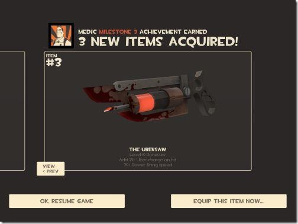
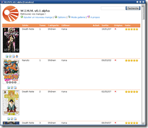
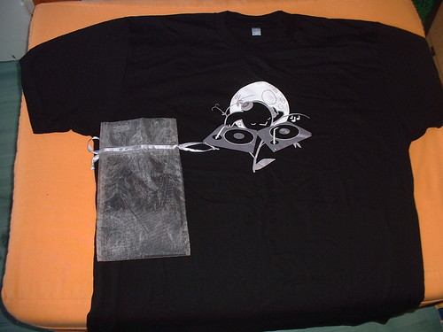
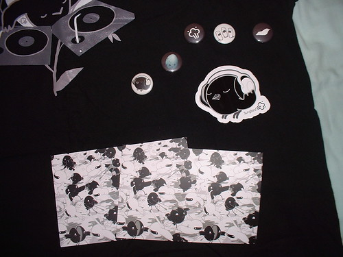

1 mai 2008
Mise à jour...
Enfin une petite mise à jour sur mon blog qui parle... de mise à jour :p
Et oui, la mise à jour pour Team Fortress 2 est enfin arrivée :) et pour cette occasion, Valve organise deux jours gratuits ou vous pourrez jouer librement à Team Fortress 2 et profiter de la nouvelle map Goldrush, des succès ainsi que les nouvelles armes du Medic !

Les deux jours gratuits sont ce weekend alors ne manquer pas l'occasion ;) et si le jeu vous plait, achetez le ! Il ne coûte pas très cher : environ 20 euros sur Internet en l'achetant sur Steam et environ 35 euros en boite dans le commerce. Plus d'information sur la mise à jour sur le site de Steam et sur TeamFortress2.fr Autre chose, j'ai repris le développement de WIMM après fait une petite pause. J'ai désormais une traduction en allemand et je suis actuellement en train de travailler le Dashboard, fonction qui vous permettra d'avoir une page personalisable : Affichage des sorties de Mangas, les mangas qui vous manquent, les news du site..

Pour finir, pendant les vacances j'ai enfin reçu mon t-shirt Songbird (emballé dans un sachet, original !) ainsi que des stickers, pins et carte postales (goodies en plus miam !)

Plus de photos sur ma gallerie Flickr...
Commentaires 2